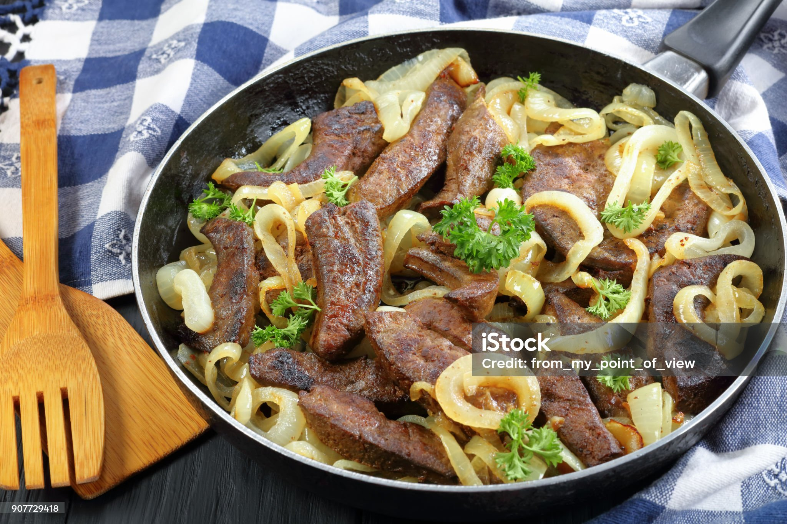

Home
Liver and Onions

Description
Smothered with caramelized onions, this beef liver is delicious and good for you too! Just be sure not to overcook it.
Ingredients
- 4 tbs butter, divided
- 1 medium onion, sliced
- 2 tsp white sugar
- 1 lb calves' livers
- 1/4 cup all-purpose flour
- salt and pepper to taste
Steps
- Gather the ingredients.
- Melt 3 tablespoons butter in a medium skillet over medium heat. Add onion and sauté until soft, about 5 minutes. Stir in sugar, reduce the heat to low, and continue to cook and stir until onion is very tender and brown, about 25 to 30 minutes; transfer onions into a small bowl and reserve skillet.
- While the onions are cooking, rinse liver and remove the thin outer membrane. Slice liver into 1/4- to 1/2-inch-thick slices.
- Dredge liver in flour.
- Heat remaining 1 tablespoon butter in the same skillet over medium heat. Add liver and cook until browned, 1 to 1 1/2 minutes per side.
- Serve liver smothered with caramelized onions.